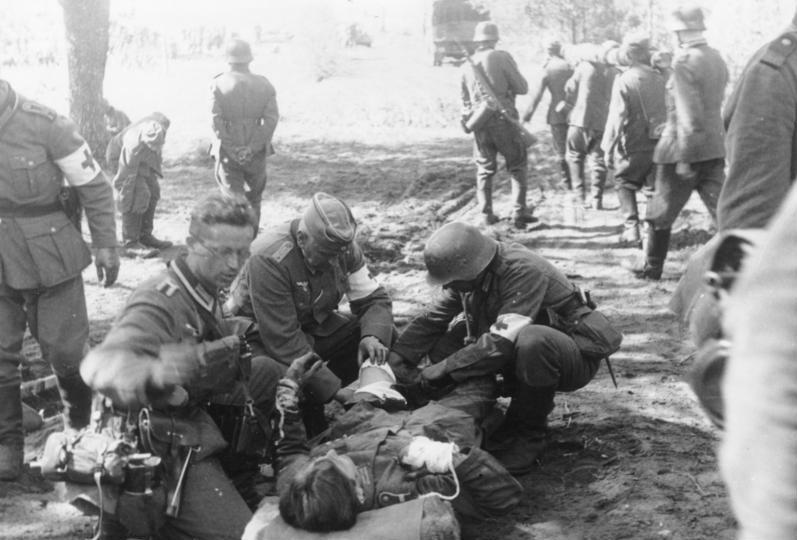
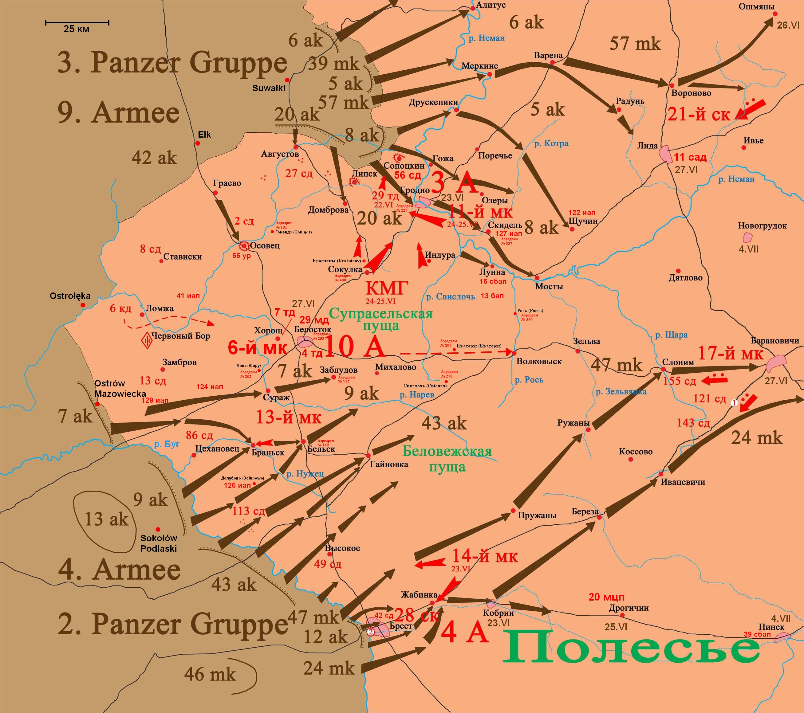
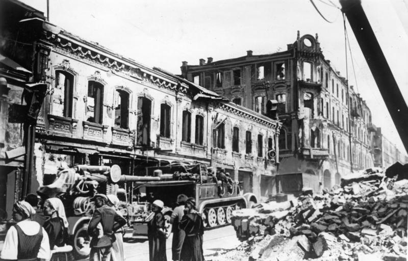
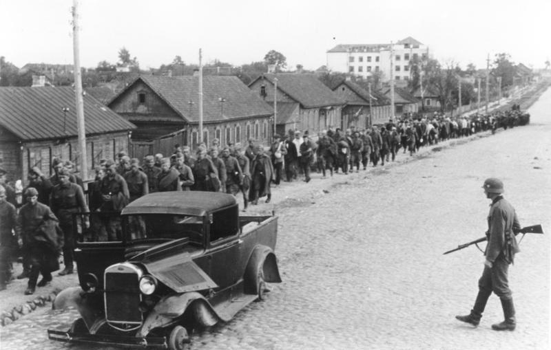
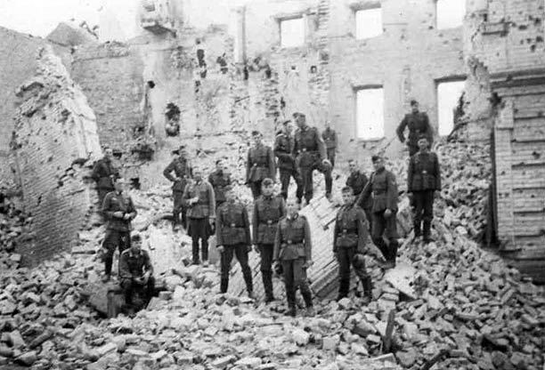

Белостокско-Минское сражение стало крупным приграничным столкновением на центральном участке советско-германского фронта, развернувшимся с 22 июня по 8 июля 1941 года - в первые недели Великой Отечественной войны. Основной удар на московском направлении наносила группа армий «Центр» под командованием немецкого вермахта. В её составе находились значительные силы: около 1,453 миллиона человек (50 дивизий), 2,1 тысячи танков, 1,7 тысячи самолётов и 15,1 тысячи артиллерийских орудий. Со стороны СССР оборону держал Западный Особый военный округ, преобразованный с началом войны в Западный фронт. Он включал три армии, объединявшие 44 дивизии общей численностью около 790 тысяч человек. На вооружении фронта находились 16,1 тысячи орудий, 3,8 тысячи танков и 2,1 тысячи самолётов. Также в распоряжении командования были 4-й и 8-й дивизионы бронепоездов. В целях обороны использовалась система укреплённых районов. Полоцкий, Минский, Мозырский и Слуцкий укрепрайоны включали в себя 876 долговременных оборонительных сооружений. В районах Гродненского, Осовецкого, Замбрувского и Брестского укреплений находилось около 200 полностью вооружённых долговременных огневых точек, 193 бронированных огневых сооружения, а также 909 полевых укреплений


Наземному наступлению вермахта предшествовал мощный авиаудар по аэродромам Западного фронта, в результате которого советская авиация понесла значительные потери уже в первые часы войны. Основной удар в Литве наносила 3-я танковая группа вермахта, целью которой было разгромить советские войска, сосредоточенные в этом районе, и выйти в тыл Западному фронту Красной армии. Уже в первый день наступления моторизованные корпуса продвинулись к реке Неман и захватили стратегически важные мосты в Алитусе и Мяркине, после чего продолжили движение на восточном берегу. Бои за Алитус между 39-м мотокорпусом вермахта и 5-й танковой дивизией Красной армии стали одними из самых ожесточённых за весь период существования 39-го корпуса - потери с обеих сторон были тяжёлыми. Одновременно с этим южнее наступала 9-я армия вермахта, которая вела фронтальную атаку на позиции 3-й советской армии. После упорных боёв советские войска были отброшены, и уже на следующий день немецкие части заняли Гродно, продолжая развивать наступление вглубь советской территории.


Вечером 22 июня 1941 года командующие Северо-Западного, Западного и Юго-Западного фронтов получили «Директиву № 3», подписанную наркомом обороны СССР маршалом С. К. Тимошенко и начальником Генштаба Г. К. Жуковым. Документ предписывал нанести мощный контрудар по наступающим немецким войскам, с целью уничтожения противника и выхода советских войск к 24 июня на территорию Польши - в районы Сувалок и Люблина. Уже 23 июня части 14-го механизированного корпуса и 28-го стрелкового корпуса 4-й армии попытались контратаковать немецкие войска в районе Бреста, но были отброшены с большими потерями. Немецкие моторизованные корпуса продолжили стремительное продвижение, заняв Пружаны, Ружаны и Кобрин, углубляясь на Барановичском и Пинском направлениях. 24 июня в районе Гродно началась крупная советская контратака силами конно-механизированной группы (КМГ), в которую вошли 6-й механизированный корпус (около 1000 танков) и 6-й кавалерийский корпус. Несмотря на значительную численность, контрудар оказался неэффективным: господство люфтваффе в воздухе, слабая координация, нарушение снабжения и потери в тылу свели наступление КМГ на нет. Отдельно действующий 11-й механизированный корпус 3-й армии добился частичного успеха - его части сумели выйти к пригородам Гродно и временно вынудили 20-й армейский корпус вермахта перейти к обороне. Однако другие соединения 9-й немецкой армии продолжили охват советских войск, сосредоточенных в Белостокском выступе. В условиях провала контрудара КМГ начала отступление Белостокский выступ, где были сосредоточены главные силы Западного фронта, имел невыгодную форму "бутылки", с узким "горлышком", направленным на восток. Выступ опирался лишь на одну основную дорогу - Белосток–Слоним, что делало снабжение и манёвры крайне затруднительными. Уже 25 июня стало очевидно, что советские войска находятся под угрозой полного окружения. Около полудня штабы 3-й и 10-й армий получили приказ об отходе: 3-я армия - на Новогрудок, 10-я армия - на Слоним. Однако времени на организованный отход почти не оставалось. 27 июня советские войска были вынуждены оставить Белосток, продолжая бои в районе Волковыска и Зельвы, стараясь удержать коридор для выхода окружённых частей.
28 июня 1941 года немецкие войска заняли Волковыск, окончательно разделив так называемый «Белостокский котёл» на две части. В западном секторе окружения оказались соединения и части 10-й армии, а в восточной - в районе Новогрудка - в основном подразделения 3-й и 13-й армий Западного фронта. Советские войска, которым удалось вырваться из Белостокского выступа, были вновь окружены - на этот раз уже в нескольких меньших «котлах» между Берестовицей, Волковыском, Мостами, Слонимом и Ружанами. 29–30 июня бои в этих районах достигли крайнего напряжения: советские части пытались прорваться из окружения, а немецкие войска стремились к их полному уничтожению. Параллельно продолжались ожесточённые бои в Брестской крепости, где оборона держалась с самого начала войны. До конца июня сопротивление сохранялось в отдельных укреплённых секторах. 29 июня немецкая авиация нанесла мощный удар по Восточному форту, сбросив на него две 500-килограммовые и одну 1800-килограммовую авиабомбу - крупнейшую из применённых на тот момент. Утром 30 июня штаб 45-й пехотной дивизии вермахта доложил о полном взятии Брестской крепости. По немецким данным, в плен было захвачено около 7 тысяч советских военнослужащих, включая 100 офицеров. Однако победа далась дорого: дивизия потеряла 482 человека убитыми, в том числе 32 офицера, и более 1000 солдат были ранены.

Тем временем немецкий 39-й моторизованный корпус, продвигаясь практически без сопротивления, уже 25 июня достиг подступов к Минску. К белорусской столице прорвались три танковые дивизии - 7-я, 20-я и 12-я - в составе до 700 танков. На следующий день к ним присоединилась 20-я моторизованная дивизия. 26 июня были заняты ключевые населённые пункты: Молодечно, Воложин и Радошковичи. 7-я танковая дивизия обошла Минск с севера и устремилась в направлении Борисова. В ночь на 27 июня её передовые части заняли Смолевичи - стратегически важный пункт на шоссе Минск - Москва. Уже 28 июня , около 17:00, подразделения 20-й танковой дивизии ворвались в Минск с северо-западного направления. В то время как дивизии 44-го стрелкового корпуса продолжали удерживать позиции западнее города, части 2-го стрелкового корпуса отошли за Минск, заняв оборону по рубежу реки Волма. В результате охвата советских войск с севера и юга немецкими 2-й и 3-й танковыми группами, в районе Налибокской пущи оказались в окружении остатки 3-й, 10-й, а также части 13-й и 4-й армий. К 8 июля бои в так называемом Минском «котле» завершились. В результате молниеносного наступления вермахт нанёс тяжёлое поражение Западному фронту Красной Армии, захватил значительную часть территории Беларуси и продвинулся вглубь советской обороны более чем на 300 километров. В Белостокском и Минском «котлах» были полностью разгромлены 11 стрелковых, 2 кавалерийские, 6 танковых и 4 моторизованные дивизии. Безвозвратные потери Красной Армии составили около 341 тысячи человек, санитарные - ещё 77 тысяч. Потери немецкой стороны были существенно ниже: 20 тысяч раненых и 1,1 тысячи пропавших без вести.
Поражение под Минском оказало глубочайшее психологическое воздействие на советское руководство. 28 июня И.В. Сталин, в кругу членов Политбюро, с горечью произнёс: «Ленин оставил нам великое наследие, а мы, его наследники, всё это просрали…». Тем временем Советское Информбюро не сообщило населению о сдаче города. 30 июня был арестован командующий Западным фронтом генерал армии Д.Г. Павлов. После краткого следствия он был осуждён Военной коллегией Верховного суда СССР, лишён воинского звания и наград, приговорён к расстрелу. Вместе с ним 22 июля были расстреляны начальник штаба фронта генерал-майор В.Е. Климовских и начальник связи генерал-майор А.Т. Григорьев. Начальник артиллерии фронта генерал-лейтенант Н.А. Клич и командир 14-го механизированного корпуса генерал-майор С.И. Оборин были арестованы 8 июля, а позднее - также расстреляны. Командующий 4-й армией генерал-майор А.А. Коробков был отстранён от должности 8 июля, на следующий день арестован и расстрелян 22 июля. Заместитель командующего ВВС Западного фронта генерал-майор авиации А. Таюрский был арестован позже и расстрелян 23 февраля 1942 года. Узнав о катастрофических потерях авиации в первый день войны, командующий ВВС Западного Особого военного округа генерал-майор И.И. Копец покончил с собой. Командир 9-й смешанной авиационной дивизии, потерявшей 347 из 409 самолётов за одни сутки, генерал-майор С.А. Черных был арестован 8 июля 1941 года и вскоре расстрелян. Все эти жертвы репрессий были посмертно реабилитированы и восстановлены в воинских званиях после смерти Сталина.